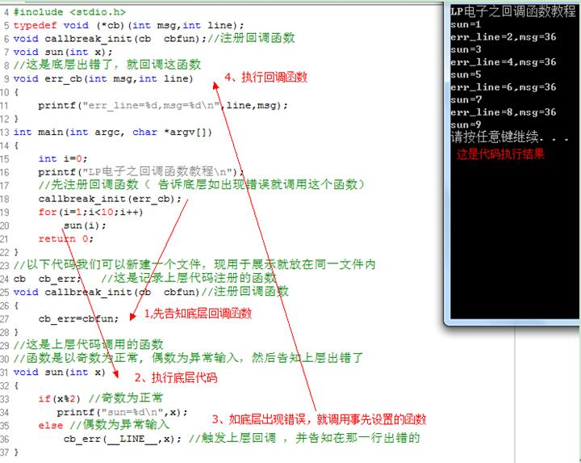

1、 前言
本教程是讲述 c 语言或其他语言中，回调函数的使用方法，如有描述错误请
指出。
笔者认为回调函数的作用是令代码可以分层使代码便于阅读，也利于多人合
作编程。回调函数好处很多但缺点是增加一点内存与减低一点代码效率，但对于
这些损失与使用回调函数所带来的好处前者可以忽略不计了。
下面我们来看一下怎样写回调函数.
* 1.先定义回调函数的函数格式
typedef void (*cb)(int msg,int line);
- 2.然后是回调函数实体 //这是底层出错了，就回调这函数
void err_cb(int msg,int line)
{
printf("err_line=%d,msg=%d\n",line,msg);
}
- 3.主函数是：
int main(int argc, char *argv[])
{
int i=0;
printf("LP电子之回调函数教程\n");
//先注册回调函数（ 告诉底层如出现错误就调用这个函数）
callbreak_init(err_cb);
for(i=1;i<10;i++)
{
sun(i);
}
return 0;
}
- 4.以下代码我们可以新建一个文件，现用于展示就放在同一文件内
cb cb_err; //这是记录上层代码注册的函数
void callbreak_init(cb cbfun)//注册回调函数
{
cb_err=cbfun;
}
//这是上层代码调用的函数 //函数是以奇数为正常, 偶数为异常输入，然后告知上层出错了
void sun(int x)
{
if(x%2) //奇数为正常
{
printf("sun=%d\n",x);
}
else //偶数为异常输入
{
cb_err(__LINE__,x); //触发上层回调 ，并告知在那一行出错的
}
}
这是代码运行结果

作用
以上代码例子，说明回调函数主要是在编写代码过程中先注册一个函数给底层，就是告诉底层如有什么事，就通过这个函数告诉我，对于对于多人合作或代码分层设计代码结构的 好处是，大家并一定要事先约定一定函数名字是什么，上层只需要告知底层出问题了或通知 什么就回调事先注册的函数。
若以上代码，不使用回调函数的话，那底层与上层函数就需要一起用这个函数了 void err_cb(int msg,int line)，但使用了回调函数 cb_err;，那上层与底层就各自命名函数名字了，便于多人合作编程。
另：上述代码中的__LINE__的意思有“当前代码的行数”，若底层有很多 cb_err;的调用，那我们就很方便找出到底是哪一行的回调函数了。
[END]